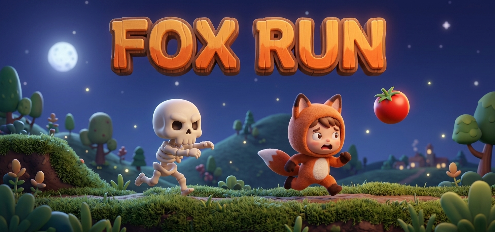

🍎
Colete as maçãs
Cada maçã coletada soma pontos. Quanto mais você pega, mais pontos.
mini-jogo grátis, direto no navegador
Fox Run é um joguinho rapidinho pra jogar entre uma aula e outra. Sem instalar nada, sem cadastro — é só clicar em "jogar agora" e correr.
Jogar agora
sobre o jogo
Fox Run nasceu pra ser aquele jogo que você abre na hora do intervalo. Você controla a raposa, corre pelo cenário e coleta o máximo de maçãs possível antes que o esqueleto te alcance.
Nada de tutoriais longos ou telas de carregamento. O jogo abre, você já entende as regras e em cinco segundos já está jogando.
como jogar
Cada maçã coletada soma pontos. Quanto mais você pega, mais pontos.
Se o esqueleto te alcançar, a partida acaba. Fuja o quanto der.
Se tocar em algum obstáculos, a partida acaba. pule para evita-los.
contato
Manda uma mensagem pra gente. Toda sugestão de fase, personagem ou power-up é lida com carinho antes da próxima atualização do jogo.